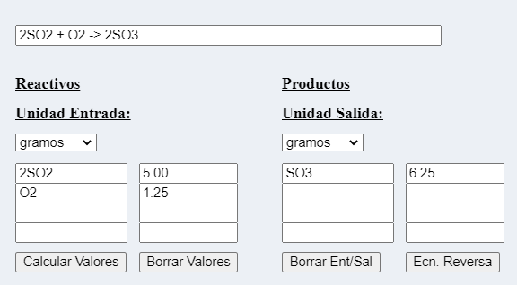
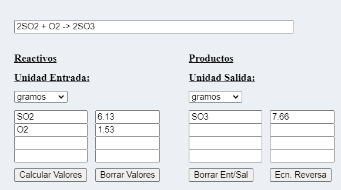
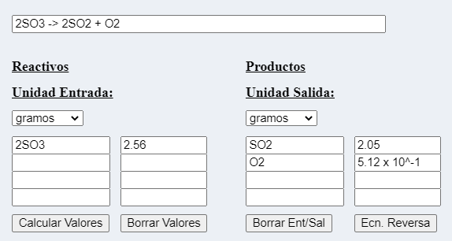
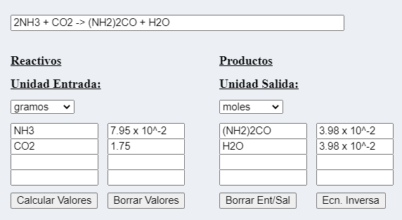

» Instrucciones
Se usa notación convencional, es decir, la primera letra de un elemento está en mayúscula y la segunda es una letra pequeña. Ingrese la ecuación como se muestra a continuación. Allí debe haber un espacio antes y después de los signos + y ->. Cuando se usa notación científica, debe haber un espacio antes y después del signo x .
Después de ingresar la ecuación balanceada, puede especificar cualquiera de los reactivos
y su cantidad. Tenga en cuenta que debido a que SO2 es el primer reactivo en el
ecuación, aparece como el primer reactivo en la lista. También tenga en cuenta la entrada
formato para notación científica. Esta calculadora no puede resolver problemas de reactivo limitante.
Para utilizar correctamente la calculadora, utiliza los siguientes ejemplos:
» Ejemplo 1:
¿Cuántos gramos de SO3 se obtienen a partir de 5.00 g de SO2?
- Borre utilizando el botón Borrar Ent/Sal
- Escriba la ecuación balanceada 2SO2 + O2 -> 2SO3 en la casilla correspondiente.
- En Unidad Entrada seleccione gramos
- Escriba 2SO2 en el primer cuadro de valores.
- Escriba en el cuadro derecho 5.00
- Seleccione gramos en Unidad Salida
- Haga clic en Calcular Valores
- Obtendrá una respuesta de 6.25 gramos. 
- La calculadora le dará también 1.25 gramos requeridos de O2.
» Ejemplo 2:
¿Cuántos gramos de SO3 se obtienen a partir de 1.53 g de O2?
- Borre utilizando el botón Borrar Ent/Sal
- Escriba la ecuación balanceada 2SO2 + O2 -> 2SO3 en la casilla correspondiente.
- En Unidad Entrada seleccione gramos
- Escriba O2 en el segundo cuadro de valores (observe que O2 es el segundo reactivo).
- Escriba en el cuadro derecho 1.53
- Seleccione gramos en Unidad Salida
- Haga clic en Calcular Valores
- Obtendrá una respuesta de 7.66 gramos. 
- La calculadora le dará también 6.13 gramos requeridos de SO2.
» Ejemplo 3:
¿Cuántos gramos de SO2 se requieren para obtener 2.56 gramos SO3?
- Borre utilizando el botón Borrar Ent/Sal
- Escriba la ecuación balanceada inversa 2SO3 -> 2SO2 + O2 en la casilla correspondiente.
- En Unidad Entrada seleccione gramos
- Escriba SO3 en el primer cuadro de valores.
- Escriba en el cuadro derecho 2.56
- Seleccione gramos en Unidad Salida
- Haga clic en Calcular Valores
- Obtendrá una respuesta de 2.05 gramos. 
- La calculadora le dará también 5.12 x 10-1 gramos de O2.
» Ejemplo 4:
Cuántos moles de (NH2)2CO (urea) se requieren para obtener 1.75 gramos de CO2 (dióxido de carbono) a partir de la siguiente ecuación balanceada:
(NH2)2CO + H2O -> 2NH3 + CO2
- Borre utilizando el botón Borrar Ent/Sal
- El dato de la cantidad conocida siempre debe escribirse del lado izquierdo, y en este caso por ser el segundo producto, en el segundo cuadro.
- Para hacer cálculo es necesario invertir la reacción Ecn Inversa.
2NH3 + CO2 -> (NH2)2CO + H2O
- En Unidad Entrada seleccione gramos
- Seleccione moles en Unidad Salida.
- Haga clic en Calcular Valores
- Obtendrá una respuesta de 3.98 x 10-2 moles. 
- La calculadora le dará también 7.95 x 10-2 gramos NH3 y 3.98 x 10-2 moles de H2O.